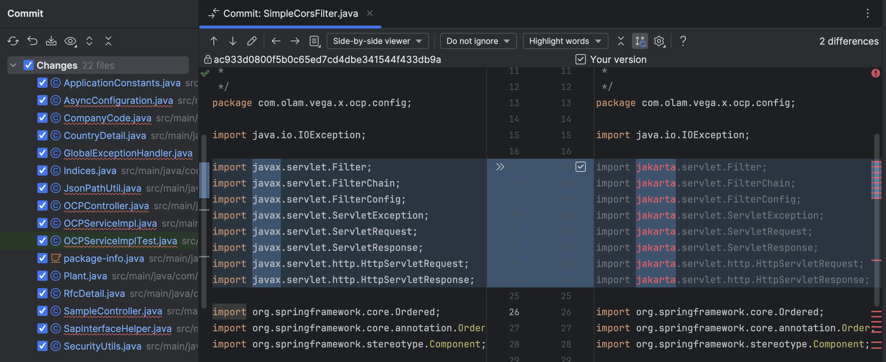

1. Introduction
1.1. Problem Statement: Legacy code upgrades
The development teams grapple with the challenge of upgrading legacy codebases to leverage the latest language features and framework enhancements. Outdated code can hinder progress, introduce security vulnerabilities, and impede the adoption of new functionalities. For example, upgrading Java 11 to Java 21 and spring boot to latest version 3.2.
Manual refactoring procedures demand considerable time, are susceptible to errors, and require substantial resources, presenting a formidable obstacle for developers aiming to modernize their applications.
This guide is for engineers, consultants, and others who want to use AppRenovX Migrate application and code assessment for Java (APPRENOVX) to migrate Java applications or other components. It describes how to install and run the utilities, review the generated reports, and take advantage of additional features.
1.2. Solution approach: Automated Refactoring in 2-step approach
The initial step in the automated refactoring process involves thorough assessment and analysis of the existing codebase. Utilizing tools like Mindsprint AppRenovX toolkit, developers can meticulously examine the code and gain insights into the necessary changes required for modernization. AppRenovX does comprehensive analysis to identify potential issues, dependencies, and areas for improvement.
The next step involves automated code refactoring. OpenRewrite emerges as a powerful tool for automating the refactoring process, seamlessly integrating into the development workflow. Leveraging OpenRewrite's auto-refactoring engine, developers can efficiently implement the identified changes, ensuring adherence to modern coding standards and best practices.
This automated approach not only expedites the refactoring process but also minimizes the risk of human error, enhancing overall code quality and maintainability.
1.2.1. About AppRenovX CLI
The AppRenovX Migrate application and code assessment for Java (APPRENOVX) is an extensible and customizable rule-based tool that simplifies the migration and modernization of Java applications.
APPRENOVX examines application artifacts and supports many migration paths, including the following examples:
-
Replatforming connectivity between applications and external resources to leverage AppRenovX services
-
Assessing code patterns for Cloud hosted resources such as databases, messaging queues, logging systems, and more
-
Containerizing applications and making them cloud-ready
-
Assessing code patterns for better security
-
Upgrading OpenJDK versions and distributions
-
Upgrading commonly used libraries and frameworks
1.2.2. How does AppRenovX simplify Java code refactoring or migration?
The AppRenovX Migrate application and code assessment for Java looks for common resources and known trouble spots when migrating applications. It provides a high-level view of the technologies used by the application.
AppRenovX generates a detailed report evaluating a migration or modernization path. This report can help you to estimate the effort required for large-scale projects and to reduce the work involved.
1.2.3. About OpenRewrite
OpenRewrite automates the refactoring process, transforming tasks that could take hours or days into minutes.
-
Utilizes prepackaged, open-source refactoring recipes for common tasks like framework migrations, security fixes.
-
Offers plugins for build tools like Gradle and Maven
-
Initially focused on Java, OpenRewrite is expanding to include a wider range of languages and frameworks.
-
Supported by a growing community and dedicated improving software maintainability and security.
-
Refer the OpenRewrite page for more details:
|
Note
|
Eventhough the initial step using AppRenovX CLI can be optional, we recommend running the CLI to capture the initial assessment report and you can use the same CLI to compare the output post refactoring code. Refer "section 4" if you want to skip initial assessment steps and directly enter to code refactoring |
2. Installing and Running the AppRenovX
2.1. About the CLI
The CLI is a command-line tool in the AppRenovX Migrate application and code assessment for Java that allows you to assess and prioritize migration and modernization efforts for applications. It provides numerous reports that highlight the analysis without the overhead of the other tools.
You can install the CLI on Linux, Windows, or macOS operating systems.
-
Java Development Kit (JDK) installed. AppRenovX supports the following JDKs:
-
Microsoft Build of OpenJDK 11
-
Microsoft Build of OpenJDK 17
-
Eclipse Temurin JDK 11
-
Eclipse Temurin JDK 17
-
-
8 GB RAM
-
macOS installation: the value of
maxprocmust be2048or greater.
-
Extract the
.zipfile to a directory of your choice.NoteIf you are installing on a Windows operating system:
-
Extract the
.zipfile to a folder namedAPPRENOVXto avoid aPath too longerror. Alternatively, extract the file with 7-Zip to a folder of any name you choose. -
If a Confirm file replace window is displayed during extraction, click Yes to all.
When you encounter
<APPRENOVX_HOME>in this guide, replace it with the actual path to your APPRENOVX installation. -
2.2. Running the CLI
You can run APPRENOVX against your application or project source code folder.
-
Open a terminal and navigate to the
<APPRENOVX_HOME>/bin/directory. -
Execute the
apprenovxscript, orapprenovx.batfor Windows, and specify the appropriate arguments:> apprenovx-cli.bat --input "C:\path\to\example-app-1.0.0.war" --output "D:\path\to\output" --target "cloud-readiness" "quarkus" "jakarta-ee" --packages com.acme org.apache-
--input: The application to be evaluated. -
--output: The output directory for the generated reports. -
--target: The target Apprenovx service for the application migration. -
--packages: The packages to be evaluated. This argument is highly recommended to improve performance and narrow scope.
-
-
Access the report by opening the
index.htmlfile in the output folder.NoteYou will get warnings if you don't select specific packages and the CLI will scan all the packages. If in case the output folder has existing files, it will be overwritten.
WARNING: No packages were set in --packages. This will cause all .jar files to be decompiled and can possibly take a long time. Check the APPRENOVX User Guide for performance tips. Overwrite all contents of "D:\path\to\output" (anything already in the directory will be deleted)? [y,N]Select specific packages if there are more app packages and to get specific target output.
2.2.1. APPRENOVX command examples
Running APPRENOVX an application archive
The following command in linux system analyzes the
ms-samplepackage of the ms-sample.war example WAR archive to check readiness for quarkus:$ <APRENOVX_HOME>/bin/apprenovx-cli \ --input /path/to/ms-sample.war \ --output /path/to/report-output/ \ --target quarkus \ --packages org.cartRunning APPRENOVX on source code
The following command analyzes the
org.shoppingcartpackage of the shopping-cart-master.zip example source code for migrating to Azure App Service.$ <APPRENOVX_HOME>/bin/apprenovx-cli --sourceMode \ --input /path/to/shopping-cart-master/shopping-cart-main \ --output /path/to/report-output/ \ --target azure-appservice \ --packages org.shoppingcartOverriding APPRENOVX properties
To override the default Fernflower decompiler, pass the
-Dwindup.decompilerargument on the command line. For example, to use the Procyon decompiler, use the following syntax:$ <APPRENOVX_HOME>/bin/apprenovx -Dwindup.decompiler=procyon \ --input <INPUT_ARCHIVE_OR_DIRECTORY> --output <OUTPUT_REPORT_DIRECTORY> \ --target <TARGET_TECHNOLOGY> --packages <PACKAGE_1> <PACKAGE_2>2.2.2. APPRENOVX CLI Bash completion
The APPRENOVX CLI provides an option to enable Bash completion for Linux systems, allowing the APPRENOVX command-line arguments to be auto completed by pressing the Tab key when entering the commands. For instance, when Bash completion is enabled, entering the following displays a list of available arguments.
$ <APPRENOVX_HOME>/bin/apprenovx [TAB]Enabling Bash completion
To enable Bash completion for the current shell, execute the following command:
$ source <APPRENOVX_HOME>/bash-completion/apprenovx2.2.3. Accessing APPRENOVX help
To see the complete list of available arguments for the
apprenovxcommand, open a terminal, navigate to the<APPRENOVX_HOME>directory, and execute the following command:$ <APPRENOVX_HOME>/bin/apprenovx-cli --help
3. Accessing AppRenovX reports
When you run the AppRenovX Migrate application and code assessment for Java, a report
is generated
in the <OUTPUT_REPORT_DIRECTORY> that you specify using the
--output argument in the command line.
The output directory contains the following files and subdirectories:
<OUTPUT_REPORT_DIRECTORY>/
index.html // Landing page for the report
<EXPORT_FILE>.csv // Optional export of data in CSV format
archives/ // Archives extracted from the application
mavenized/ // Optional Maven project structure
reports/ // Generated HTML reports
stats/ // Performance statistics
3.1 Procedure for viewing the report
-
Obtai the path of the
index.htmlfile of your report from the output that appears after you run APPRENOVX:Report created: <OUTPUT_REPORT_DIRECTORY>/index.html Access it at this URL: file:///<OUTPUT_REPORT_DIRECTORY>/index.html -
Open the
index.htmlfile by using a browser.The generated report is displayed.
3.2 Exporting the report in CSV format
APPRENOVX provides the ability to export the report data, including
the
classifications and hints,
to a flat file on your local file system. The export function
currently
supports the
CSV file
format, which presents the report data as fields separated by commas
(,).
To export the report as a CSV file, run APPRENOVX with the
--exportCSV
argument.
A CSV file is created in the directory specified by the
--output
argument for
each application analyzed.
All discovered issues, spanning all the analyzed applications, are
included in the
AllIssues.csv file that is exported to the root
directory
of the
report.
Accessing the report from the application report
If you have exported the CSV report, you can download all the CSV issues in the Issues Report. To download these issues, click Download All Issues CSV in the Issues Report.

4. Refactoring Solution using OpenRewrite
OpenRewrite revolutionizes the way developers handle legacy code upgrades and technical debt reduction through an automated refactoring ecosystem. It streamlines the refactoring process, turning laborious coding tasks into minutes of automated corrections, across various frameworks and languages.
-
Automated Refactoring: Simplifies code upgrades and technical debt elimination with an auto-refactoring engine.
-
Prepackaged Recipes: Offers a suite of open-source refactoring tasks for framework migrations, security enhancements, and code style consistency.
-
Build Tool Integration: Facilitates refactoring through plugins like the OpenRewrite Gradle and Maven plugins, enabling application on individual repositories.
-
Community-Driven Expansion: Benefits from an active community working to extend language and framework support, ensuring software remains up-to-date and secure.
|
Note
|
OpenRewrite's extension beyond Java includes support for Python, Jenkins plugins, and more, broadening its utility for automated code transformations and maintenance tasks. |
4.1. Pre-requisites to run OpenRewrite
-
JDK (version 1.8+)
-
A JRE alone is insufficient since OpenRewrite uses compiler internals and tools only found in the JDK
-
Maven (version 3.2+) or Gradle (version 4.0+)
-
IntelliJ (version 2024.1+) with built-in support for OpenRewrite.
|
Note
|
IntelliJ IDEA provides full built-in support for OpenRewrite, you can also use alternative IDEs such as Eclipse, Visual Studio Code, and others. However, it's important to note that these alternative IDEs may offer limited features. Analyzing a Java application with AppRenovX is vital for identifying necessary changes. You can refer to the CSV file to select appropriate recipes from the Openrewrite repository. |
4.1.1 How to select the right recipes for refactoring
To select the right recipes for your tech stack, such as Java 17, Java 21, Spring Boot 3.2, and Hibernate 6.2, ensure compatibility by consulting OpenRewrite's Official documentation. Identify transformation needs and match them with compatible recipes.
The AppRenovX Report offers tailored recommendations to streamline selecting the appropriate refactoring recipes, providing valuable insights and guidance.
Example: Refactoring Java Code from Version 11 to Version 17 using Maven PluginNote: If you need instructions for Gradle projects, please refer to the official documentation provided by Openrewrite.
For Maven projects, follow the below example to refactor Java code from
version 11 to version 17 using the rewrite-maven-plugin. To complete
this
migration task, the active recipe
org.openrewrite.java.migrate.UpgradeToJava17is specified.
<project>
<build>
<plugins>
<plugin>
<groupId>org.openrewrite.maven</groupId>
<artifactId>rewrite-maven-plugin</artifactId>
<version>5.23.1</version>
<configuration>
<activeRecipes>
<recipe>org.openrewrite.java.migrate.UpgradeToJava17</recipe>
</activeRecipes>
</configuration>
<dependencies>
<dependency>
<groupId>org.openrewrite.recipe</groupId>
<artifactId>rewrite-migrate-java</artifactId>
<version>2.9.0</version>
</dependency>
</dependencies>
</plugin>
</plugins>
</build>
</project>
To utilize custom recipes in OpenRewrite and add multiple recipes simultaneously for Java 21, Spring Boot 3.2, and Hibernate 6.2, you can use the following structure as an example:
<project>
<build>
<plugins>
<plugin>
<groupId>org.openrewrite.maven</groupId>
<artifactId>rewrite-maven-plugin</artifactId>
<version>5.23.1</version>
<configuration>
<activeRecipes>
<recipe>org.openrewrite.java.migrate.UpgradeToJava21</recipe>
<recipe>org.openrewrite.java.spring.boot3.UpgradeSpringBoot_3_2</recipe>
<recipe>org.openrewrite.hibernate.MigrateToHibernate62</recipe>
</activeRecipes>
</configuration>
<dependencies>
<dependency>
<groupId>org.openrewrite.recipe</groupId>
<artifactId>rewrite-migrate-java</artifactId>
<version>2.9.0</version>
</dependency>
<dependency>
<groupId>org.openrewrite.recipe</groupId>
<artifactId>rewrite-spring</artifactId>
<version>5.5.0</version>
</dependency>
<dependency>
<groupId>org.openrewrite.recipe</groupId>
<artifactId>rewrite-hibernate</artifactId>
<version>1.2.0</version>
</dependency>
</dependencies>
</plugin>
</plugins>
</build>
</project>
4.1.2 Recommended Recipes for Java and springboot
Below is a list of recipes that can aid in upgrading the technology stack to the latest versions, such as Java 21, Hibernate ORM 6.2, upgrading Spring Boot to 3.2, upgrading Spring Security, or transitioning from JavaX to Jakarta while also performing code cleanup. The optimal combination of recipes requires a thorough understanding of the current codebase.
<recipe>org.openrewrite.java.migrate.UpgradeToJava21</recipe>
<recipe>org.openrewrite.java.spring.boot3.UpgradeSpringBoot_3_2</recipe>
<recipe>org.openrewrite.java.spring.boot3.SpringBootProperties_3_2</recipe>
<recipe>org.openrewrite.hibernate.MigrateToHibernate61</recipe>
<recipe>org.openrewrite.java.migrate.jakarta.JavaxMigrationToJakarta</recipe>
<recipe>org.openrewrite.java.spring.security6.UpgradeSpringSecurity_6_1</recipe>
<recipe>org.openrewrite.hibernate.TypeAnnotationParameter</recipe>
<recipe>org.openrewrite.hibernate.MigrateToHibernateDependencies61</recipe>
<recipe>org.openrewrite.hibernate.TypeDescriptorToType</recipe>
<recipe>org.openrewrite.hibernate.MigrateToHypersistenceUtilsHibernate6.0</recipe>
<recipe>org.openrewrite.hibernate.ReplaceLazyCollectionAnnotation</recipe>
<recipe>org.openrewrite.staticanalysis.CodeCleanup</recipe>
<recipe>org.openrewrite.staticanalysis.CommonStaticAnalysis</recipe>
4.2.Steps to execute the code changes using openrewrite plugin
The CSV formatted output file contains the following data fields:
- Step:1 Git Initialize
-
Before proceeding, initialize a Git repository by running
git initin the project directory. Commit all the existing code by executinggit commit -m "Initial commit". - Step:2a Adding recipes
-
Add the OpenRewrite recipes inside the
pom.xmlfileAdd the plugin To Pom.xml - Step:2b (Optional) Using Openrewrite plugin in IntelliJ
-
Install Openrewrite plugin which will be available as Openrewriter in community version and Openrewrite in Ultimate version.
You will get an interface to add the recipes and execute from there. However note that, you will not be able to review the changes as mentioned in step-5.
Select the respective recipes - Step:3 Clean Maven build the following commands:
- Step:4 Execute Rewrite plugin
-
Run the command
mvn rewrite:discoverto view the active recipes in the terminal. Ensure that you see "Build success" after running the command.You have the option to run either here or in the terminal. - Step:5 Perform Dryrun
-
Execute the command
mvn rewrite:dryRunto preview the changes that will be applied to the application. You can find these changes in thetarget>>rewritedirectory. Check the rewrite patch file to inspect all modifications.Rewrite Patch file is present inside the target fileReview the rewrite patch file and proceed to run.Additional Approach To See the ChangesWe can view these changes in the Git diff by applying the "rewrite.patch" file. The Git diff command will show you the differences in the files which are indicated in the patch file. This will allow you to review the specific changes made to these files.
- Step:6 Perform Run
-
Run the command
mvn rewrite:runto apply all the changes to the application. After running this command, the changes will be reflected in the application.After running the command, you will see the build success, and all the changes mentioned in the rewrite patch will be reflected in our full code.Review the changes and Commit the code changes - Step:7 Rewrite plugin removal
-
After completing all the steps, remember to commit the changes made to the code by running
git commit -am "After Refactoring Code To latest".
mvn clean
mvn install
4.3 Updating the dependencies changes in pom.xml
It is mandatory to make the following changes in the pom.xml file:
- Update Spring Boot to the latest version.
- Upgrade Java version to JDK 21.
- Set the Spring Cloud version to the latest release (e.g., 2023.0.0).
- Ensure that the
spring-security-oauth2.versionis updated to the latest available version. - Change
centralized-iamversion from 1.2.34a to 1.2.37.
|
Note
|
After making these changes, update the Java version on your local machine and IDE to JDK 21. Run the application in JDK 21 and resolve any dependencies issues and plugins accordingly |
- Update Azure SDK: Set your project's configuration (e.g., pom.xml) to the newest Azure SDK.
- Adjust Code for Azure: Update your code to work with the new Azure SDK.
- Upgrade PostgreSQL: Move to the latest supported PostgreSQL version.
- Refresh Swagger: Get the latest Swagger version for your project.
Important: Always check and update all project dependencies according to the latest guidelines to keep your project up-to-date and secure.
4.3.1 (Optional) How to autoupdate all dependencies to latest version
To update all versions of dependencies and plugins to the latest or advanced
versions in your pom.xml file, you can use the
versions-maven-plugin. This plugin helps in managing and
updating versions efficiently
<plugin>
<groupId>org.codehaus.mojo</groupId>
<artifactId>versions-maven-plugin</artifactId>
<version>2.16.2</version>
<executions>
<execution>
<id>update-versions</id>
<goals>
<goal>update-properties</goal>
</goals>
</execution>
</executions>
</plugin>
After adding the plugin configuration to your pom.xml, you can run the following commands to see the changes and update the versions:
- To display available plugin updates:
mvn versions:display-plugin-updates
- To display available dependency updates:
mvn versions:display-dependency-updates
- To update properties in your pom.xml with the latest versions:
mvn versions:update-properties
|
Note
|
Before proceeding with this plugin, please confirm its compatibility with the Application. Once confirmed, you can start using it to update dependencies and plugins to their advanced versions. |
Appendix A: Reference material
The report examples shown in the following sections are a result of analyzing the
com.acme and org.apache packages in the
sample-app-1.0.0.ear
example application.
The report was generated using the following command.
$ <APPRENOVX_HOME>/bin/apprenovx --input /home/username/apprenovx-cli-source/test-files/sample-app-1.0.0.ear/ --output /home/username/apprenovx-cli-reports/sample-app-1.0.0.ear-report --target eap:6 --packages com.acme org.apache
Use a browser to open the index.html file located in the report
output
directory. This opens a landing page that lists the applications that were
processed. Each
row contains a high-level overview of the story points, number of incidents, and
technologies encountered in that application.
|
Note
|
The incidents and estimated story points change as new rules are added to APPRENOVX The values here may not match what you see when you test this application. |
The following table lists all the reports and pages that can be accessed from this main AppRenovX landing page. Click the name of the application, sample-app-1.0.0.ear, to view the application report.
| Page | How to Access |
|---|---|
|
Application |
Click the name of the application. |
|
Technologies report |
Click the Technologies link at the top of the page. |
|
Archives shared by multiple applications |
Click the Archives shared by multiple applicationslink. Note that this link is only available when there are shared archives across multiple applications. |
|
Rule providers execution overview |
Click the Rule providers execution overview link at the bottom of the page. |
Application report
Dashboard
Access this report from the report landing page by clicking on the application name in the Application List.
The dashboard gives an overview of the entire application migration effort. It summarizes:
-
The incidents and story points by category
-
The incidents and story points by level of effort of the suggested changes
-
The incidents by package
The top navigation bar lists the various reports that contain additional details about the migration of this application. Note that only those reports that are applicable to the current application will be available.
| Report | Description |
|---|---|
|
Issues |
Provides a concise summary of all issues that require attention. |
|
Application details |
Provides a detailed overview of all resources found within the application that may need attention during the migration. |
|
Technologies |
Displays all embedded libraries grouped by functionality, allowing you to quickly view the technologies used in each application. |
|
Dependencies |
Displays all Java-packaged dependencies found within the application. |
Issues report
Access this report from the dashboard by clicking the Issues link.
This report includes details about every issue that was raised by the selected migration paths.
Each reported issue may be expanded, by clicking on the title, to obtain additional details. The following information is provided.
-
A list of files where the incidents occurred, along with the number of incidents within each file. If the file is a Java source file, then clicking the filename will direct you to the corresponding Source report.
-
A detailed description of the issue. This description outlines the problem, provides any known solutions, and references supporting documentation regarding either the issue or resolution.
-
A direct link, entitled Show Rule, to the rule that generated the issue.

Issues are sorted into four categories by default. Information on these categories is available at ask Category.
Application details report
Access this report from the dashboard by clicking the Application Details link.
The report lists the story points, the Java incidents by package, and a count of the occurrences of the technologies found in the application. Next is a display of application messages generated during the migration process. Finally, there is a breakdown of this information for each archive analyzed during the process.
Expand the
sample-app-1.0.0.ear/sample.jar to
review
the story points, Java incidents by package, and a count of the
occurrences of the
technologies found in this archive. This summary begins with a total of
the story
points assigned to its migration, followed by a table detailing the
changes required
for each file in the archive. The report contains the following columns.
| Column Name | Description |
|---|---|
|
Name |
The name of the file being analyzed. |
|
Technology |
The type of file being analyzed, for example, Decompiled Java File or Properties. |
|
Issues |
Warnings about areas of code that need review or changes. |
|
Story Points |
Level of effort required to migrate the file. |
Technologies report
Access this report from the application report dashboard by clicking the Technologies tab.
The report lists the occurrences of technologies, grouped by function, in the analyzed application. It is an overview of the technologies found in the application and is designed to assist users in quickly understanding each application’s purpose.
The image below shows the technologies used in the
sample-app.
Transactions report
A Transactions report displays the call stack, which executes
operations
on
relational database tables. The Enable Transaction Analysis feature
supports Spring
Data JPA and the traditional preparedStatement() method
for
SQL
statement execution. It does not support ORM frameworks, such as
Hibernate.
Source report
The Source report displays the migration issues in the context of the source file in which they were discovered.
A.1.2 About the CSV data structure
The CSV formatted output file contains the following data fields:
- Rule Id
-
The ID of the rule that generated the given item.
- Problem type
-
hint or classification
- Title
-
The title of the classification or hint. This field summarizes the issue for the given item.
- Description
-
The detailed description of the issue for the given item.
- Links
-
URLs that provide additional information about the issue. A link consists of two attributes: the link and a description of the link.
- Application
-
The name of the application for which this item was generated.
- File Name
-
The name of the file for the given item.
- File Path
-
The file path for the given item.
- Line
-
The line number of the file for the given item.
- Story points
-
The number of story points, which represent the level of effort, assigned to the given item.
APPENDIX B: About APPRENOVX command-line arguments
The following is a detailed description of the available APPRENOVX command line arguments.
|
Note
|
To run the APPRENOVX command without prompting, for example when executing from a script, you must use the following arguments:
|
| Argument | Description | ||
|---|---|---|---|
|
--analyzeKnownLibraries |
Flag to analyze known software artifacts embedded within your application. By default, APPRENOVX only analyzes application code.
|
||
|
--batchMode |
Flag to specify that APPRENOVX should be run in a non-interactive mode without prompting for confirmation. This mode takes the default values for any parameters not passed into the command line. |
||
|
--debug |
Flag to run APPRENOVX in debug mode. |
||
|
--disableTattletale |
Flag to disable generation of the
Tattletale report.
If both
|
||
|
--discoverPackages |
Flag to list all available packages in the input binary application. |
||
|
--enableClassNotFoundAnalysis |
Flag to enable analysis of Java files that are not available on the class path. This should not be used if some classes will be unavailable at analysis time. |
||
|
--enableCompatibleFilesReport |
Flag to enable generation of the Compatible Files report. Due to processing all files without found issues, this report may take a long time for large applications. |
||
|
--enableTransactionAnalysis |
[Technology Preview] Flag to enable
generation of a
Transactions report
that displays the call stack, which
executes
operations on relational
database tables. The Enable Transaction
Analysis
feature supports Spring
Data JPA and the traditional
|
||
|
--excludePackages |
A space-delimited list of packages to
exclude from
evaluation. For
example, entering
|
||
|
--excludeTags |
A space-delimited list of tags to
exclude. When
specified, rules with
these tags will not be processed. To see
the full
list of tags, use the
|
||
|
--explodedApp |
Flag to indicate that the provided input directory contains source files for a single application. |
||
|
--exportCSV |
Flag to export the report data to a CSV
file on your
local file system.
APPRENOVX creates the file in the
directory specified
by the
|
||
|
--exportSummary |
Flag to instruct APPRENOVX to generate an
|
||
|
--exportZipReport |
This argument creates a
|
||
|
--help |
Display the APPRENOVX help message. |
||
|
--includeTags |
A space-delimited list of tags to use.
When
specified, only rules with
these tags will be processed. To see the
full list
of tags, use the
|
||
|
--input |
A space-delimited list of the path to the file or directory containing one or more applications to be analyzed. This argument is required. |
||
|
--keepWorkDirs |
Flag to instruct APPRENOVX to not delete temporary working files, such as the graph database and extracted archive files. This is useful for debugging purposes. |
||
|
--legacyReports |
Flag to instruct APPRENOVX to generate the old format reports instead of the new format reports. |
||
|
--list |
Flag to list installed add-ons. |
||
|
--listSourceTechnologies |
Flag to list all available source technologies. |
||
|
--listTags |
Flag to list all available tags. |
||
|
--listTargetTechnologies |
Flag to list all available target technologies. |
||
|
--mavenize |
Flag to create a Maven project directory
structure
based on the structure
and content of the application. This
creates
|
||
|
--mavenizeGroupId |
When used with the
|
||
|
--online |
Flag to allow network access for features that require it. Currently only validating XML schemas against external resources relies on Internet access. Note that this comes with a performance penalty. |
||
|
--output |
Specify the path to the directory to output the report information generated by APPRENOVX. |
||
|
--overwrite |
Flag to force delete the existing output
directory
specified by
|
||
|
--packages |
A space-delimited list of the packages to be evaluated by APPRENOVX. It is highly recommended to use this argument. |
||
|
--remove |
Remove the specified add-ons. The syntax
is
|
||
|
--skipReports |
Flag to indicate that HTML reports should
not be
generated. A common use
of this argument is when exporting
report data to a
CSV file using
|
||
|
--source |
A space-delimited list of one or more
source
technologies, servers,
platforms, or frameworks to migrate
from. This
argument, in conjunction
with the |
||
|
--sourceMode |
Flag to indicate that the application to be evaluated contains source files rather than compiled binaries. The sourceMode argument has been deprecated. There is no longer the need to specify it. APPRENOVX can intuitively process any inputs that are presented to it. In addition, project source folders can be analyzed with binary inputs within the same analysis execution. |
||
|
--target |
A space-delimited list of one or more
target
technologies, servers,
platforms, or frameworks to migrate to.
This
argument, in conjunction
with the |
||
|
--userIgnorePath |
Specify a location, in addition to
|
||
|
--userLabelsDirectory |
Specify a location for APPRENOVX to look
for custom
Target Runtime Labels.
The value can be a directory containing
label files
or a single label
file. The Target Runtime Label files
must use the
|
||
|
--userRulesDirectory |
Specify a location, in addition to
|
||
|
--version |
Display the APPRENOVX version. |
||
|
--skipSourceCodeReports |
This option skips generating a Source code report when generating the application analysis report. Use this advanced option when concerned about source code information appearing in the application analysis. |
Specifying the input
A space-delimited list of the path to the file or directory containing one or more applications to be analyzed. This argument is required.
--input <INPUT_ARCHIVE_OR_DIRECTORY> [...]Depending on whether the input file type provided to the
--input argument is
a file or directory, it will be evaluated as follows
depending on
the additional
arguments provided.
- Directory
-
--explodedApp --sourceMode Neither Argument The directory is evaluated as a single application.
The directory is evaluated as a single application.
Each subdirectory is evaluated as an application.
- File
-
--explodedApp --sourceMode Neither Argument Argument is ignored; the file is evaluated as a single application.
The file is evaluated as a compressed project.
The file is evaluated as a single application.
Specifying the output directory
Specify the path to the directory to output the report information generated by APPRENOVX.
--output <OUTPUT_REPORT_DIRECTORY>-
If omitted, the report will be generated in an
<INPUT_ARCHIVE_OR_DIRECTORY>.reportdirectory. -
If the output directory exists, you will be prompted with the following (with a default of N).
Overwrite all contents of "/home/username/<OUTPUT_REPORT_DIRECTORY>" (anything already in the directory will be deleted)? [y,N]
However, if you specify the --overwrite
argument,
APPRENOVX will proceed to
delete and recreate the directory. See the description
of this
argument for more
information.
Setting the source technology
A space-delimited list of one or more source
technologies, servers,
platforms, or
frameworks to migrate from. This argument, in
conjunction with the
--target
argument, helps to determine which rulesets are used.
Use the
--listSourceTechnologies argument to list
all available
sources.
--source <SOURCE_1> <SOURCE_2>The --source argument now provides version
support,
which follows the Maven
version range syntax. This instructs APPRENOVX to
only run
the rulesets matching
the specified versions. For example,
--source eap:5.
Setting the target technology
A space-delimited list of one or more target
technologies, servers,
platforms, or
frameworks to migrate to. This argument, in conjunction
with the
--source
argument, helps to determine which rulesets are used. If
you do not
specify this option,
you are prompted to select a target. Use the
--listTargetTechnologies
argument to list all available targets.
--target <TARGET_1> <TARGET_2>The --target argument now provides version
support,
which follows the Maven
version range syntax. This instructs APPRENOVX to
only run
the rulesets matching
the specified versions. For example,
--target eap:7.
A.1.5. Selecting packages
A space-delimited list of the packages to be evaluated by APPRENOVX. It is highly recommended to use this argument.
--packages <PACKAGE_1> <PACKAGE_2> <PACKAGE_N>-
In most cases, you are interested only in evaluating custom application class packages and not standard Java EE or third party packages. The
<PACKAGE_N>argument is a package prefix; all subpackages will be scanned. For example, to scan the packagescom.mycustomappandcom.myotherapp, use--packages com.mycustomapp com.myotherappargument on the command line. -
While you can provide package names for standard Java EE third party software like
org.apache, it is usually best not to include them as they should not impact the migration effort.
|
Warning
|
If you omit the |
Appendix C: About rule And Story points
C.1 What are story points?
Story points are an abstract metric commonly used in Agile software development to estimate the level of effort needed to implement a feature or change.
The APPRENOVX Migrate application and code assessment for Java uses story points to express the level of effort needed to migrate application constructs, and the application. It does not necessarily translate to man-hours, but the value should be consistent across tasks.
C.1. How story points are estimated in rules
Estimating the level of effort for the story points for a rule can be tricky. The following are the general guidelines APPRENOVX uses when estimating the level of effort required for a rule.
| Level of Effort | Story Points | Description |
|---|---|---|
|
Information |
0 |
An informational warning with very low or no priority for migration. |
|
Trivial |
1 |
The migration is a trivial change or a simple library swap with no or minimal API changes. |
|
Complex |
3 |
The changes required for the migration task are complex but have a documented solution. |
|
Redesign |
5 |
The migration task requires a redesign or a complete library change, with significant API changes. |
|
Rearchitecture |
7 |
The migration requires a complete rearchitecture of the component or subsystem. |
|
Unknown |
13 |
The migration solution is not known and may need a complete rewrite. |
C.3. Task category
In addition to the level of effort, you can categorize migration tasks to indicate the severity of the task. The following categories are used to group issues to help prioritize the migration effort.
- Mandatory
-
The task must be completed for a successful migration. If the changes are not made, the resulting application will not build or run successfully. Examples include replacement of proprietary APIs that are not supported in the target platform.
- Optional
-
If the migration task is not completed, the application should work, but the results may not be optimal. If the change is not made at the time of migration, it is recommended to put it on the schedule soon after your migration is completed. An example of this would be the upgrade of EJB 2.x code to EJB 3.
- Potential
-
The task should be examined during the migration process, but there is not enough detailed information to determine if the task is mandatory for the migration to succeed. An example of this would be migrating to a third-party proprietary type where there is no directly compatible type.
- Information
-
The task is included to inform you of the existence of certain files. These may need to be examined or modified as part of the modernization effort, but changes are typically not required. An example of this would be the presence of a logging dependency or a Maven
pom.xml.